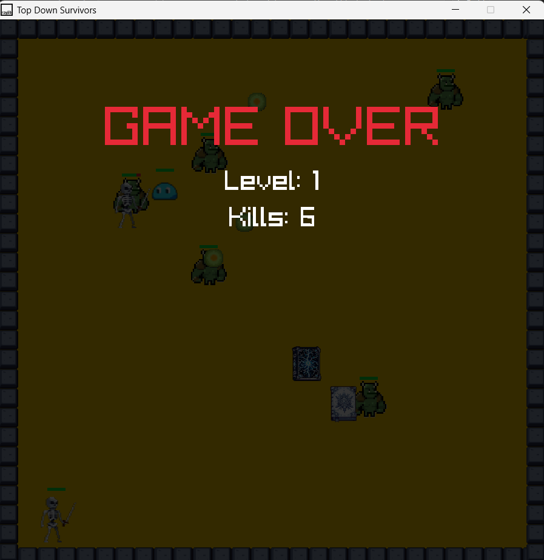
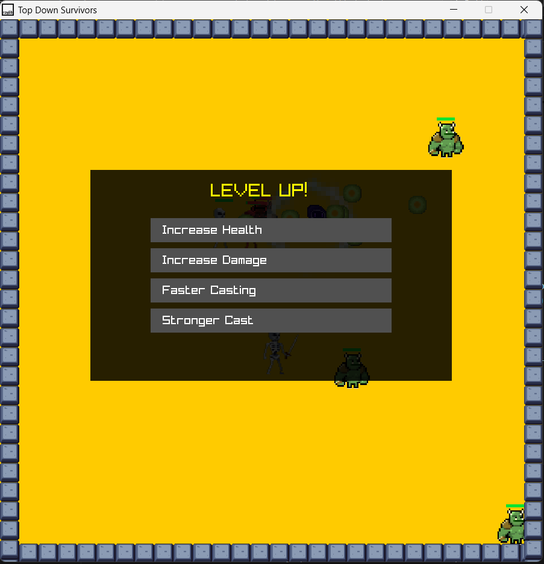

Wizard Game
Game Information
Wizard Survivor is a game I created for the subject Fundamentals of Game Programming using C++ and raylib. The game is about a small wizard trying to survive waves of enemies such as skeletons and slimes. It is inspired by the "Vampire Survivors" genre. The player must defeat enemies to gain XP, level up, and become stronger. Players can also collect spell books to unlock abilities such as fireballs, ice orbits, and lightning AOE attacks.
Gameplay



What I Learned
I improved my skills in C++, game loops, enemy AI, and wave systems...
What I Learned
I improved my skills in C++, game loops, enemy AI, and wave systems...